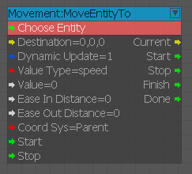
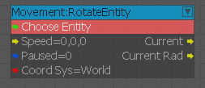
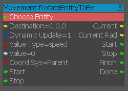

MoveEntityTo
Move an entity to a destination position at a defined speed or in a defined interval of time.

Inputs
| Port | Type | Description |
|---|---|---|
| Destination | Vec3 | Position of the destination. |
| DynamicUpdate | Boolean | Indicates if destination position is to be followed if it changes. |
| ValueType | Integer | Type of input: Speed, Time, |
| Value | Float | Speed (m/sec) or Time (sec) value |
| EaseInDistance | Float | Distance from destination at which the entity starts slowing down |
| EaseOutDistance | Float | Distance from destination at which the entity starts speeding up |
| CoordSys | Integer | Coordinate system of the destination: Parent, World, or Local. |
| Start | Any | Starts movement |
| Stop | Any | Stops movement |
Outputs
| Port | Type | Description |
|---|---|---|
| Current | Vec3 | Current position |
| Start | Any | Activated when Start is triggered |
| Stop | Any | Activated when Stop is triggered |
| Finish | Any | Activated when the destination is reached |
| Done | Any | Activated when the destination is reached or Stop is triggered. |
RotateEntity
Rotate at a defined speed.

Inputs
| Port | Type | Description |
|---|---|---|
| Pause | Any | Pause updates |
| Speed | Vec3 | Angular velocity (degrees/sec) |
| CoordSys | Integer | Coordinate system for rotation: World, Local |
Outputs
| Port | Type | Description |
|---|---|---|
| Current | Vec3 | Current rotation in degrees |
| CurrentRad | Vec3 | Current rotation in radians |
RotateEntityToEx
Rotate an entity during a defined period of time or with a defined speed.

Inputs
| Port | Type | Description |
|---|---|---|
| Destination | Vec3 | Destination position (in degrees) |
| DynamicUpdate | Boolean | If dynamic updates are enabled or not |
| ValueType | Integer | Type of input value: Speed (m/sec) or Time (sec) |
| Value | Float | Value of Speed or Time |
| CoordSys | Integer | Coordinate system of the destination: Parent, World, Local |
| Start | Any | Starts movement |
| Stop | Any | Stops movement |
Outputs
| Port | Type | Description |
|---|---|---|
| Current | Vec3 | Current rotation in degrees |
| CurrentRad | Vec3 | Current rotation in radians |
| Start | Any | Activated when Start input is triggered |
| Stop | Any | Activated when Stop input is triggered |
| Finish | Any | Activated when destination rotation is reached |
| Done | Any | Activated when destination rotation is reached or Stop is triggered |
Deprecated Nodes
- MoveTo
- RotateEntitySpeed
- RotateEntityTo
- RotateTo